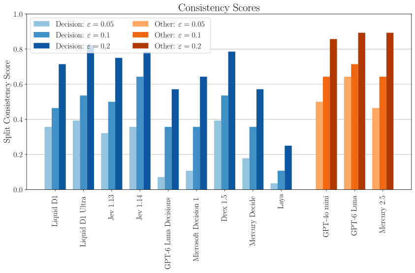
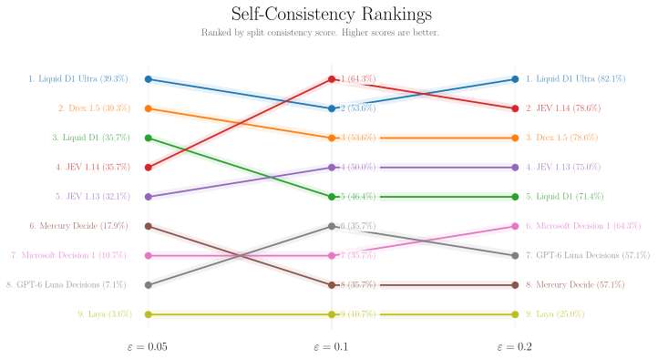

Split Consistency in Decision Models
Testing decision models for split consistency under the law of total probability
- Affiliations
- ETH Zürich, Switzerland
- Published
What is the probability that Federer wins against Nadal in a tennis match?
The overall forecast
Split then aggregate forecast
Law of Total Probability
Coherent forecasts must satisfy this equality.
Split Consistency Check
Pass if$|0.55 - 0.45| < \varepsilon$for a fixed tolerance $\varepsilon > 0$
Abstract
Decision models are artificial intelligence (AI) systems designed to return structured answers—such as choices, scores, and probabilities—with reliable estimates of uncertainty. Models such as Jev11Jev by TypeSafe AI.2Laya by Convai Innovations.3The law of total probability states $P(E) = \sum_i P(E\mid A_i)P(A_i)$, where $\{A_i\}_i$ is a set of mutually exclusive and collectively exhaustive events. and Laya2 promise to make AI judgments more dependable and easier to integrate into automated decisions. But reliability requires more than individually plausible predictions: predictions made under different assumptions must also fit together. For example, suppose a model considers rain and dry weather equally likely. If it predicts a 60% chance of a traffic jam when it rains and a 20% chance when it stays dry, its overall estimate should be 40%. Any other estimate would be inconsistent with these predictions. This agreement between unconditional and conditional probability estimates is the form of statistical self-consistency we examine in this post. The principle extends beyond the two weather scenarios. Whenever events are mutually exclusive and collectively exhaustive, the overall prediction should match the average of the conditional predictions, weighted by the events’ probabilities. The law of total probability3 formalizes this requirement and gives us a way to test a model’s internal consistency without knowing the true outcomes. In this blog post, we ask whether decision models deliver on their promise of greater reliability by subjecting nine popular decision models to this check.
Method
Consider a forecasting question about whether an event $E$ will occur. We can ask a model for its probability directly, or ask for conditional forecasts under two complementary scenarios, defined by whether a condition $A$ holds or not. In the opening figure, $E$ is the event that Federer wins a match against Nadal, and $A$ is the condition that the match is played on clay. We combine the forecasts for clay and other surfaces using the model's probabilities for those scenarios. The events $A$ and $\neg A$ are mutually exclusive and collectively exhaustive. A coherent set of probabilities must therefore satisfy the law of total probability:
The right-hand side reconstructs the overall forecast by weighting each conditional forecast by the probability of its scenario. The left-hand side expresses the probability of the same event without conditioning on either scenario. Both expressions describe the same quantity, so they should agree. We test this agreement using one binary split per forecasting question and the model's own estimates of both the event probabilities and the priors. No observed outcomes or reference probabilities are needed.
Evaluation: One split per forecasting question
We evaluate nine decision models66The nine decision models evaluated are: Liquid D1, Liquid D1 Ultra, Jev 1.13, Jev 1.14, GPT-6 Luna Decisions, Microsoft Decision 1, Drex 1.5, Mercury Decide, and Laya.7Consistency-forecasting dataset and evaluation code. We use 28 questions sampled from its high-quality synthetic subset and augment them with question-specific split conditions. on 28 synthetic forecasting questions, which we sampled from the high-quality subset of the consistency-forecasting dataset.7 We augment each question with one synthetic binary split tailored to its subject. Each split defines a meaningful condition and its complement, and remains fixed across the evaluated models. This gives every model the same set of 28 question–split pairs. For each pair, we elicit the direct probability of the forecast event, its probability conditional on each branch, and the probabilities assigned to the split branches. We then combine the two conditional forecasts using the branch probabilities as weights and compare the result with the direct forecast.
Split consistency checks
For each question, let $\widehat{p}$ denote the model's direct probability estimate and $\widehat{p}_{\mathrm{agg}}$ the aggregate reconstructed from the two branches of the single split. The question passes the split consistency check if
The tolerance $\varepsilon$ specifies how much disagreement we allow between the direct estimate and the aggregate.
Averaging over questions
We collect the tests in a set $\mathcal{Q}$, with each test pairing a forecasting question with a fixed binary split. For test $q$, we write the direct estimate as $\widehat{p}_q$ and the reconstructed aggregate as $\widehat{p}_{q,\mathrm{agg}}$.
In this post, we instantiate $\mathcal{Q}$ as the set of 28 forecasting questions, each paired with its fixed binary split. We report scores at $\varepsilon\in\{0.05,0.10,0.20\}$, allowing discrepancies of less than 5, 10, and 20 percentage points, respectively. These three thresholds show how the assessment changes as we relax the consistency requirement.
Findings: Even decision models violate self-consistency
The results below show split consistency scores at the three tolerances for the nine decision models in our main evaluation. We also include three large language models (LLMs) for comparison. Higher scores indicate that more of a model's direct forecasts agree with their reconstructed counterparts.

Among the decision models, Liquid D1 Ultra and Drex 1.5 tie for the highest score at the strictest tolerance, $\varepsilon=0.05$, each passing only 11 of the 28 checks (39.3%). Raising the tolerance to $\varepsilon=0.10$ puts Jev 1.14 ahead of the other decision models, with 18 passing checks (64.3%).88Scores can only increase or remain unchanged as the tolerance grows, because every check that passes a stricter threshold also passes a more permissive one. These gains therefore reflect the relaxed acceptance criterion rather than changes in the underlying forecasts. Even at the most permissive tolerance, $\varepsilon=0.20$, no decision model passes all checks. Scores range widely, from 25.0% for Laya to 82.1% for Liquid D1 Ultra, which leads this group with 23 of the 28 checks passed. For its remaining five questions, even this leading decision model's direct and reconstructed forecasts differ by at least 20 percentage points. Despite substantial differences in performance, every evaluated decision model thus exhibits split consistency violations at every tested tolerance.
The comparison LLMs score higher than all nine decision models at the strictest tolerance, passing between 13 and 18 checks. At $\varepsilon=0.10$, GPT-6 Luna passes 20 checks (71.4%), while GPT-4o mini and Mercury 2.5 each match the leading decision model. At $\varepsilon=0.20$, all three LLMs again exceed the best decision model. On these 28 questions, all three comparison LLMs therefore match or exceed the strongest decision model at every tolerance, although none achieves full split consistency.
Sensitivity: Consistency rankings are stable across thresholds
The choice of tolerance changes the absolute scores, but does it also change which models perform best? We compare the model rankings at the same three thresholds in the ranking figure below.

The same five models occupy the leading group throughout: Liquid D1 Ultra, Drex 1.5, Liquid D1, Jev 1.14, and Jev 1.13. Laya has the lowest score at all three thresholds. These stable groupings suggest that the broad comparison is not driven by a single choice of tolerance. However, there are some changes in the internal ordering of the leading group. We conclude that broad relative performance is mostly preserved, while exact ranks depend on the tolerance and require attention to tied scores.
Outlook
Our supplementary evaluation applies the ExpEvidence check of Paleka et al.4 to nine decision models, extending the split consistency analysis in our paper5 to a new model class. Across 28 synthetic forecasting questions, every model violates the consistency requirement on some question–split pairs at each of the three tested tolerances. Although absolute scores change with the tolerance, the leading and trailing groups remain broadly stable. These findings support evaluating consistency across a model’s predictions as a distinct dimension of model quality, alongside accuracy and calibration. Split consistency offers a reference-free way to assess this dimension, exposing disagreements among a model’s own probability estimates before forecast outcomes are known.
A next step is to establish how broadly these findings hold by expanding the question set and varying split conditions and prompt formulations. Beyond evaluation, self-consistency could also serve as an optimization target. Can training or inference-time interventions reduce disagreements between direct forecasts and their conditional reconstructions? Testing whether such improvements generalize to unseen questions and splits would help distinguish a broader gain in consistency from adaptation to a particular evaluation setup. Evaluations with observed outcomes should also examine whether consistency gains improve accuracy and calibration or introduce tradeoffs between these dimensions.
Citation
To cite this supplementary evaluation:
Patrik Wolf, Thomas Kleine Buening, Andreas Krause, and Celestine Mendler-Dünner.
"Split Consistency in Decision Models." Blog post, October 2026.
@misc{wolf2026decisionmodels,
title = {Split Consistency in Decision Models},
author = {Wolf, Patrik and Kleine Buening, Thomas and Krause, Andreas and Mendler-Dünner, Celestine},
year = {2026},
month = oct,
note = {Blog post; supplementary evaluation for Partition, Prompt, Aggregate: Statistical Self-Consistency in Language Models}
}
The broader evaluation framework
Our paper studies the same consistency principle in a broader population setting. A population can be partitioned repeatedly into smaller subgroups, forming a tree of increasingly fine partitions. Conditional estimates for those subgroups can be combined using their prior probabilities to reconstruct an overall prediction. Comparing that aggregate with the direct estimate at the root tests statistical self-consistency.
The framework also allows comparisons with ground-truth data to assess predictive accuracy. Such comparisons answer a separate question: whether the estimates agree with observed outcomes. The evaluation in this post uses one binary split per forecasting question and compares only the model's own estimates; it uses neither deeper partition trees nor ground-truth comparisons.